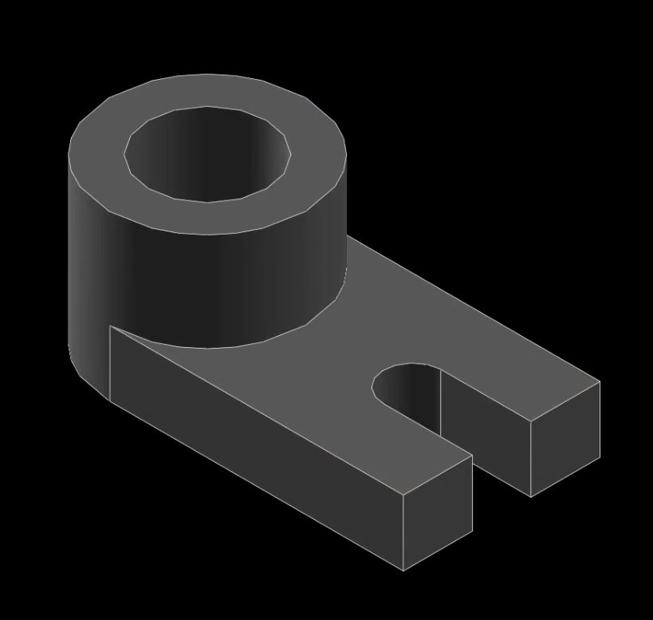

week2-5 <<
Previous Next >> week10-14
week6-9
week6
1.參數化零組件繪製二輪自走車
1.將solvespace打開
2.繪製輪胎及輪軸
(1)繪製一圓圈(使用指令c)作為輪胎
(2)運用New Group中的sketh in new workplace(快捷鍵為shift+w)進入草圖中所選定的基準面
(3)在草圖中運用上述C快捷鍵繪製一圓作為輪軸並且輸入其長度
(4)儲存零件等等作為組立時使用
3.繪製車身
(1)繪製車身本體，並且輸入其安裝輪軸時的長度及車身的長度和厚度
(2)車身前端必須做除料，繪製好要除料的部分之後用difference將該部位去除
(3)在車身兩個立面打上輪軸孔以便等一下安裝車軸
4.組立自走車
(1)將輪軸零件已在車身零件檔中開啟
(2)運用平行的功能將輪軸軸心與孔的軸心平行對準
(3)運用重和鍵將輪軸與孔重合
(4)重複(1)-(3)的步驟將另外一輪之輪軸組立起來
操作影片:
成品圖:
2.網際 V-rep 模型控制:
1.將mde.tw中的task1打開，並且下載其中的 V-rep 3.6.1 rev 4.7z 壓縮檔和網際 V-rep 模型控制: web_vrep2.zip (local)
2.將隨身碟中start_mdecourse打開並且在其中輸入regedit
3.打上regedit後會將登錄編輯程式打開，按下第一個HKEY_CLASSES_ROOT並用編輯中的尋找，尋找.py
4.再找到路徑.py_auto_file/shell/edit/command
5.將.py這個機碼和其子機碼刪除(包刮py_auto_file)
(若尋找時找不到.py之資料夾,則1到5點可以不做)
6.從下載下來的web_vrep2中app.py用編輯器開啟
7.從下載下來的路徑V-REP3\V-REP_PRO_EDU中找到vrep.exe
8.用v_rep中的file的open scene將下載下來的web_vrep2中two_wheeler.ttt打開
9.剛剛編輯器開啟之app.py使用編輯器的tool中的go將其控制器開啟
10.使用localhost:5000將控制器開啟
11.運用控制器的前後左右測試是否可以控制車子
12v-rep必須要將右上方開始鈕按下
操作影片:
3.新增啟動與停止按鈕:
1.將mde_course打開
2.用編輯器開啟templates中的controls.html
3.在第19行打上從下方向左按鈕指令複製來的指令並且將其改寫成start和stop
4.因為有start和stop兩個按鈕所以必須要放置兩行指令
指令:<td><a class="pure-button pure-button-primary" href="/do/start">start</a></td><a class="pure-button pure-button-primary" href="/do/stop">stop</a></td>
5.結束後儲存並且用上方tool中的go測試是否已將按鈕放入
6.用編輯器開啟vrep_linefollower定義其中開始和結束按鈕
指令:if direction == 'start':
vrep.simxStartSimulation(self.clientID, vrep.simx_opmode_oneshot)
elif direction == 'stop':
vrep.simxStopSimulation(self.clientID, vrep.simx_opmode_oneshot)
else :
7.到課程網站中的老師倉儲中尋找issue
8.其中有一項issue為置入start和stop按鈕的指令
9.複製並且依照影片中將其貼上
10.在每行指令前定義好所需的指令例如:(if else elif)
11.打開vrep.exe並且用編輯器打開app.py並執行tool中的go
12.測試是否有成功運行
操作影片:
week7
(1).solvespace編譯-更改HELP中ABOUT的VERSION
1.開啟solvespace.cpp找到952行在solvespace後方加上compiled by 自己的學號
2.刪除舊的這個路徑中201906_fall\tmp\solvespace\build\src\CMakeFiles的
solvespace.cpp.obj檔，此檔案若無刪除solvespace就只會讀取這個舊有的檔案
3.進入solvespace資料夾中的這個資料夾用指令cd build
4.在黑窗中打上mingw32-make
5.開啟solvespace
6.在help中的about是否有compiled by 自己學號
操作影片:
(2.)solvespace繪圖驗證
第1題
操作影片:
成品圖:

第3題
操作影片:
成品圖:

第4題
操作影片:
成品圖:
第6題
操作影片:
成品圖:
第7題
操作影片:
成品圖:
第8題
操作影片:
成品圖:
第9題
操作影片:
成品圖:
第10題
操作影片:
成品圖:
第11題
操作影片:
成品圖:

第12題:
1.繪製長方形形狀的本體
2.繪製上方左右兩片圓柱形特徵
3.連接兩片圓柱型特徵
4.挖除中央圓型孔洞
5.下方圓型柱也以一樣的方式繪製並且若出現紅色部分則可以使用右上視窗的force nurbs surfaces to triangle鈕消除錯誤
操作影片:

成品圖:
第13題:
1.繪製梯形形狀的本體
2.繪製上方兩片梯形特徵
3.挖除梯形特徵上的槽孔
4.繪製底部圓柱若出現紅色部分則使用右上方視窗assemble按鈕
5.挖除中央圓孔若出現紅色部分使用右上視窗的force nurbs surfaces to triangle鈕
操作影片:
成品圖:
第14題
操作影片:
成品圖:
第15題
操作影片:
成品圖:
第16題
1.將solvespace打開
2.繪製本體外徑為5.75厚度為1.5的圓
3.轉到主要工作平面並且移除一外徑為5.25厚度為1.25的圓型孔
4.轉到主要工作平面，繪製一外徑為3.5的參考圓並且在其影片提到之位置會上4組具有外徑1厚度為0.25且中央有一0.5孔之特徵
5.轉到主要工作平面移除中央外徑4.25之圓型孔
6.轉到主要工作平面繪製8個外徑為0.5的圓型孔所有大小可以使用快捷鍵G使其一致
操作影片:
成品圖:
第17題
操作影片:
成品圖:
第18題
操作影片:
成品圖:
week8
1.建立webot開啟檔案:
(1)將mde.tw中的Webots_2019b_rev1.7z
(2)將start_mdecourse.bat檔複製一份並且貼上
(3)將start_mdecourse.bat名稱更改為start_mdecourse -webot.bat檔
(4)依照影片把這行指令貼入path_webots=%Disk%:\Webots_2019b_rev1\msys64\mingw64\bin;%Disk%:\Webots_2019b_rev1\msys64\usr\bin
(5)確定路徑是正確的webot檔案應該在Y:\201906_fall\data中
(6)開啟webot開啟檔也就是start_mdecourse -webot.bat
(7)開啟webot中的open sample world測試是否可以導入
操作影片:
2.開啟網誌:
(1)將leo edit開起來
(2)將config中的pelican.leo丟入leo edit裡面
(3)修改影片中有講的路徑中的siteurl更改成自己blog網址
(4)依照影片中的步驟將指令複製並在黑窗中執行
操作影片:
3.以ssh對github連線:
(1)到y槽的portablegit將sh_for_solvespace檔案複製並修改成sh.exe
(2)進入黑窗輸入sh和ssh-keygen -t rsa -b 4096 -C "使用者學號"
(3)下載putty連線工具箱並利用其中的puttygen創建兩把金鑰
(4)修改啟動器中的指令
set GIT_HOME=%Disk%:\portablegit\bin\
set GIT_SSH=%Disk%:\putty\plink.exe
(5)進入config中更改指令url = git@github.com:mdecourse/cad2019.git在mdecourse的地方要改成自己的學號
(6)開啟putty.exe進去設定github.com和proxy位置其中ssh中的auth的地方必須選取剛剛創建的金鑰
(7)用編輯器複製課程網站中的step6指令並且儲存放入.ssh資料夾之中
(8)進入github並且在setting中的ssh將金鑰開啟並複製放入金鑰設置處
操作影片:
week2-5 <<
Previous Next >> week10-14